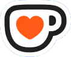

Enjoying FocusRecall?
If you find it useful and would like to show a little appreciation, you can buy me a coffee. It’s completely optional.
Buy me a coffee ☕︎

If you find it useful and would like to show a little appreciation, you can buy me a coffee. It’s completely optional.